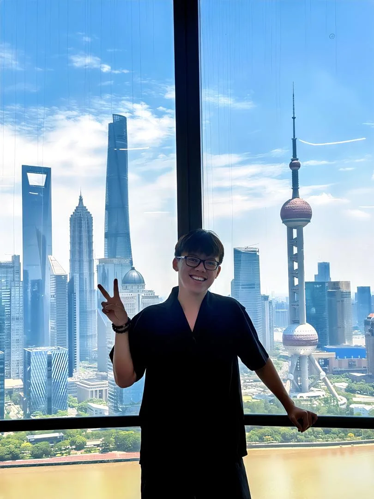
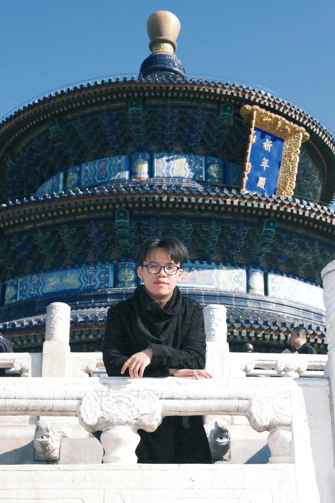

Curious mind.Creative energy.Ideas in action.
Hoong Wei Jun
Project Executive & Cross-Cultural Strategist
I bring ideas, people and cultures together, then turn them into projects that work in the real world.

I turn complexity
into momentum.
My role is not one isolated function. I move a project through the stages that usually sit between an idea and a real outcome: understanding the challenge, building the structure, aligning people and communicating what matters.
PROJECT EXECUTIVE
+ CROSS-CULTURAL
STRATEGIST
Give me a complex idea, different stakeholders and a real-world constraint. My job is to make them work together.
From ambiguity → working reality.
Physical spaces. Operational SOPs. Cross-border programmes. Marketing systems. Stakeholder coordination. Different outputs, but the same operating pattern.
A journey across
disciplines.
Science taught me to investigate. Teaching taught me to communicate. International project work taught me to build, coordinate and deliver in complex environments.
Teaching
Freelance Biology Tutor · Malaysia
Science
BSc · Applied Microbiology & Medicinal Chemistry
Research
BSc (Honours) · Biotechnology
International Projects
Project development, operations, marketing and cross-border programmes.
International Marketing & Project Manager
Mar 2025 – Aug 2026 · Lijiang, China
Si He Tai Feng (Yunnan) International Exchange Pvt. Ltd.Core member of a 3-person executive team supporting international investment, sustainable tourism, project development, operations and cross-border communications. My role expanded across three interconnected workstreams rather than three separate jobs.
Project Development & Operations
Co-led Jiazi Village's 0-to-1 development, including five facilities, operational SOPs, stakeholder coordination and programmes for 30+ international visitor groups.
Marketing & Content Operations
Led a 4-person cross-platform marketing team across WeChat, WeChat Channels and Facebook, coordinating content, bilingual brand communication, QA and an approximately CNY 6,000 marketing budget.
International Programmes & Business Development
Coordinated China–Malaysia programmes, a 20-person Malaysian delegation, Penang cultural engagement and a 130-participant international forum at Singapore Polytechnic.
Three ways I turn
complexity into outcomes.
Three flagship case studies show the same operating pattern in different contexts: build the system, communicate the value, align people and deliver under real-world constraints.


Visual Communication
Campaigns, project communication and product/brand work – supporting the projects rather than defining the portfolio.

The person behind
the projects.
I graduated from Monash University in 2024 with a background in science, but curiosity pulled me beyond the laboratory. I began exploring different ways of living and working – across cities, cultures and communities.
The people I meet and places I experience continually reshape how I think. For me, the most meaningful work happens when an idea becomes real enough to improve how people connect, participate or live.
What could we
build together?
I'm interested in opportunities where projects, markets, people and execution need to come together.
Project Management · Operations · Business Development · Cross-Cultural Strategy · Marketing